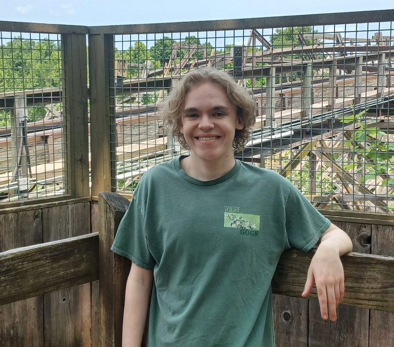

Hello! My name is Jacob Hock.
I am a student at the University of Missouri, Columbia studying Information Technology. I am passionate about accessibility in IT and attention to detail when working with customers and clients alike. Some of my interests outside of work are reading, cooking, video games, crafts like origami or embroidering, and hiking. I also like having a creative outlet in Blender, creating custom scenes and renders as well as an outlet in game development platforms like Godot. These offer an insight into one of my most important priorities being learning. Even outside of school, you’ll find me learning more about game development, modelling, Arduino projects, or even just strategies for video games. I hope to continue learning much past my end of formal schooling, best achieved by working in my chosen industry of IT.

Ozark Mountain Biscuit & Bar (Columbia, MO) Sept 2025-Present: Line Cook
- Worked in a fast-paced, high-volume kitchen with frequent full dining room and rushes
- Prepared dishes in a scratch kitchen, following recipes and quality standards from raw and local ingredients
- Performed under pressure while maintaining attention to detail while multitasking and sustaining speed during peak service hours
- Collaborated to ensure organized workflow and timely, synchronized order execution
Panera Bread (St. Louis, MO) June 2021-2024: Team Lead
- Lead cashier, managed and handled cash, ensured accurate sales records, and carried out efficient and positive Customer Service experience
- Cross-trained to all floor positions in order to aid during rushes
- Trained new team members on multiple positions